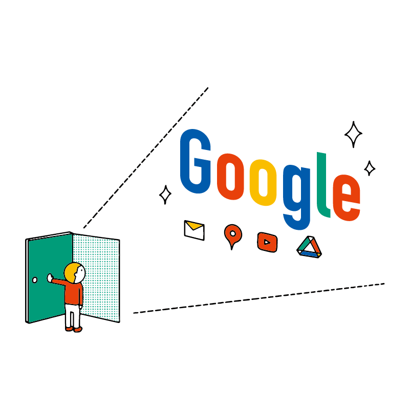

Google アカウントにログインしよう
Google（グーグル）のアカウントを取得すると、便利なサービスを利用できます。
- 既に取得している場合
- 学校や会社で Google Workspace アカウントを割り当てられている場合
- Google アカウントを取得しよう
- ログインしよう
- 複数アカウントのログイン・アカウントの切り替え
既に取得している場合
スマホなどで既に Google アカウントを取得している場合、そのアカウントを使うことができます。
この教材はログインする部分まで読み飛ばして構いません。
学校や会社で Google Workspace アカウントを割り当てられている場合
最近は Google アカウントを学校や会社が発行している場合もあります。
これは Google Workspace（グーグル・ワークスペース）と呼ばれる、学校・会社向けの Google サービスです（2020年10月までは G Suite（ジー・スイート）という名称でした）。
Google Workspace（旧 G Suite）には以下のようなメリットがあります。
- 学校・会社にとってのメリット
- 学生や従業員用のアカウントを一括で作成・管理できる
- 複雑なシステムの管理を Google に任せられる
- Google が提供する、高いレベルのセキュリティを利用できる
- 学生・従業員にとってのメリット
- Google の個人向けアカウントと使い勝手が同じ
- 組織内でデータの共有がしやすい
- スマホからも学校・会社用のメールを使える
Google Workspace を使っている学校・会社から発行されたアカウントは、一般の Google アカウントとほぼ同じように使えます（一部のアプリが制限されていることもあります）。
そのため、あなたの学校や会社から発行されたアカウントがある場合は、この講座でもそれを使用して進められます。
ただし、卒業や退職するときにはアカウントが無効になるため、余裕があればプライベートの Google アカウントも用意しておくほうが望ましいでしょう。
また、会社によっては社外から（私用のパソコンやスマホから）のログインを禁止するルールが設けられていることもあるため、ログインする前に社内のルールを確認しましょう。
近年、Google Workspace を採用している企業が日本国内でも増加しています。大企業から中小企業まで幅広く使われており、Google のサービスや Google Workspace に慣れておくと就職後にも役立つ可能性があります。
さらに、大学を中心として教育機関向けの Google Workspace を採用している学校も増えています。
Google アカウントを取得しよう
まだアカウントを持っていない場合や、別のアカウントを取得したい場合は、まず Google のサイトにアクセスしましょう。
Chrome を開き、Google にアクセスします。アドレスバーに google.com と入力し、Enter キーを押しましょう。
Google が開いたら、右上にある ログイン ボタンをクリックしましょう。
ログイン画面が切り替わったら アカウントを作成 をクリックしてください。
すると、選択肢が表示されるので、自分用 をクリックしてください。
名前や希望するユーザ名を入力する画面が現れます。それぞれ入力内容を確認しましょう。
氏名（姓名）
日本語でも英語でも大丈夫です。
ここで入力した氏名はサービスによっては他のユーザに公開されることがあります。氏名を公開したくない場合、ハンドルネーム・ニックネームを入力しても構いません。
逆に、学校や仕事で使う場合などは本名にしておくほうがよいでしょう。
後から変更することもできます。
ユーザー名
Google アカウントを作成すると、自動的に Gmail（ジーメール）というメールサービスのアドレスが発行されます。
ちょっとややこしいのですが、Google アカウントのユーザー名 が Gmailのアドレス になります。
これは他の人にも公開されるので、それに留意してユーザー名を決めましょう。
例えば、仕事などで使う場合は本名に基づいたものにするとわかりやすいでしょう。逆に、ネットで公開する場合は本名を推測できないものにする方がよいかもしれません。
また、ユーザー名が他のユーザーと重複してしまった場合は別のユーザー名にする必要があります。
なお、ユーザー名は後から変更できませんのでご注意ください。
パスワード
セキュリティを強固にするため、半角英字・半角数字・半角記号を組み合わせて 8 文字以上にする必要があります。
自分だけが思い出せるものにしましょう。また、他のサイトのアカウントで使っているパスワードと使い回すのは避けましょう。
これらを入力し終わったら、次へ をクリックしましょう。
ここで入力した情報は忘れないようにメモをして、誰にも見られないようにしておきましょう。
次に、パスワードを忘れた時などに使う情報を入力します。
省略可能ですが、省略すると忘れたときにパスワード再発行が難しくなってしまうので、ここでは携帯電話番号を入力することにします。
また、生年月日や性別は入力が必須です。
ここで入力された情報は公開されません。
入力したら 次へ をクリックしましょう。
電話番号があなたのものかどうかを確認するための表示が現れます。
ここで 配信 をクリックしましょう。
しばらくすると以下のような SMS があなたの携帯電話（スマホ）に配信されます（パソコンに表示されるわけではありません）。
このSMSに記載されているG- という文字に続く 6 桁の数字をパソコンの画面で入力しましょう。
入力したら 確認 をクリックします。
電話番号を活用したオプションを利用するか聞かれますが、 スキップ をクリックしましょう。
利用規約が表示されます。スクロールして読み進め、規約に同意できるのであれば画面の下の方にある 同意する をクリックします。
（なお、できる限り個人情報を Google に利用されたくないという場合は、同意する前に その他の設定 からカスタマイズすることもできます。）
すると、Google のトップページが表示されます。
右上に先ほど入力した自分の名前、あるいはイニシャルなどが表示されているはずです。
ログインしよう
いまアカウントを作成した方や、アカウントをお持ちの方はログイン方法を確認しておきましょう。
以下のように Google のページで「ログイン」というボタンが表示されているときは Google にログインできてない状態です（ログインできていると、アカウントのアイコンやイニシャルが表示されます）。
ログイン ボタンをクリックしましょう。
ログインページが表示されたら、アカウントのユーザー名（Gmail アドレス）を入力しましょう。
たとえば example@gmail.com というユーザー名の場合、この欄に example@gmail.com と入力しましょう。
Google Workspace の場合も同様です。たとえば学校や会社から example@nnn.ed.jp という ID をもらっている場合、この欄にそれを入力しましょう。
その後、パスワードを入力するとログインできます。
複数アカウントのログイン・アカウントの切り替え
Google アカウントは複数保有できます。
すでに 1 個のアカウントでログインした状態で、右上にあるアイコン（イニシャル）をクリックし、別のアカウントを追加 をクリックしましょう。
すると、ログイン画面が現れ、他のアカウントで追加ログインできます。
複数のアカウントでログインした状態では、右上のアイコンをクリックするとアカウントの切り替えができます。
このように、Google アカウントは簡単に切り替えられるため、用途（仕事用、プライベート用など）に応じて複数作成しても良いでしょう。